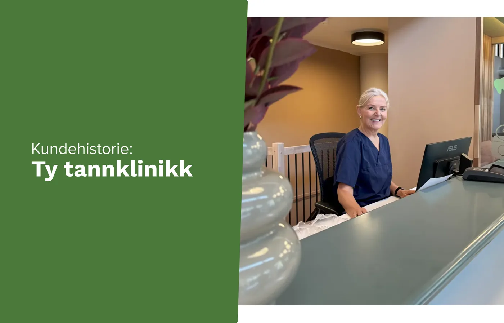
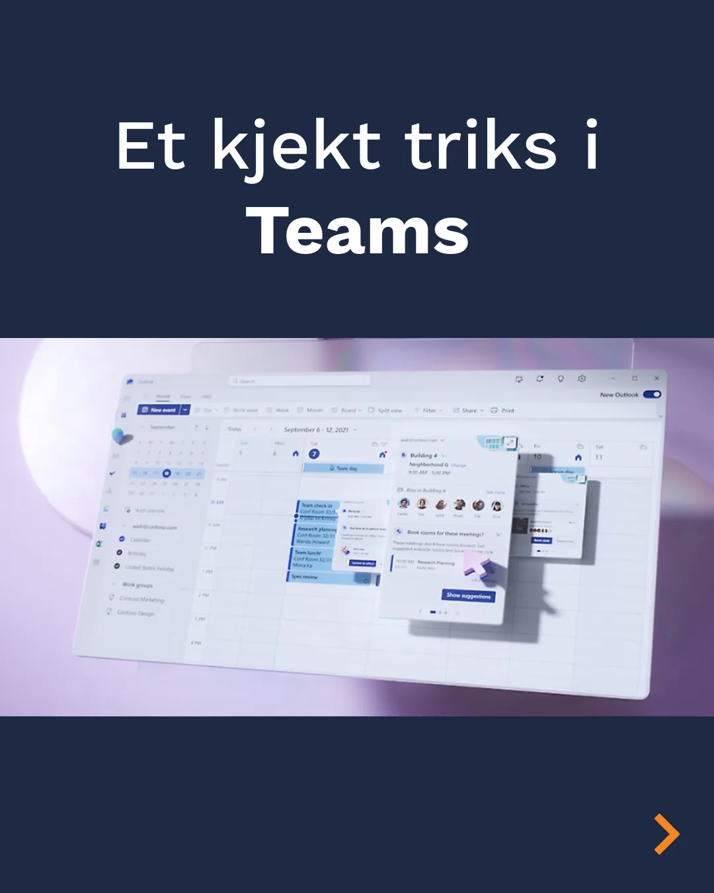

Kundehistorier
Kunder og oppdrag.
Et utvalg virksomheter vi jobber med. Ta kontakt for referanser som ligner deres situasjon.
Tannhelse
Ty tannklinikk
IT-drift og sikkerhet i en klinikk der journaler og utstyr må fungere hver dag.
Kulturhus
Sentralen
Drift og support i et hus med mange leietakere og skiftende behov.
Arkitektur
Hille Melbye Arkitekter
Skytjenester og sikkerhet for et kontor som jobber prosjektbasert.


Slik jobber vi
Faste folk, faste rutiner
Kunden skal vite hvem som svarer, og hva som skjer når noe går galt.
Sikkerhet
Lagdelt
Vi bygger sikkerhet i nivåer, slik at ett svakt punkt ikke åpner alt.